Nyzo version 516 (commit on GitHub) further improves performance of the verifier and drastically reduces the time required to resynchronize with the blockchain after a verifier outage. In testing, a verifier shut down for 100 blocks would consistently reinitialize and resynchronize within 60 seconds on a t3.small AWS instance.
This version affects the verifier only. The sentinel uses a different process to track the blockchain.
In BlockVoteManager, the vote maps have been changed to concurrent versions to improve thread safety. The numberOfVotesRequested counter has been eliminated, and lastVoteRequestTimestamp has been renamed to lastFrozenBlockRequestTimestamp to reflect the new recovery process. Also, frozenBlockRequestHeight has been added to support cycling through heights between iterations of the recovery process.

Synchronization is not needed and has been removed from the votesForHeight() method.
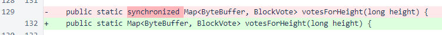The accessor method for numberOfVotesRequested has also been removed, and the requestMissingVotes() method has been renamed to requestMissingFrozenBlocks() to more appropriately describe the new process.
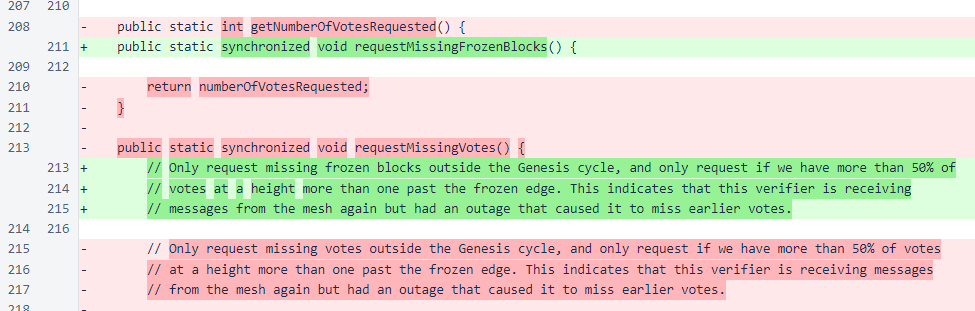The basic logic that determines whether this verifier has fallen behind is unchanged. There is still a minimum interval between requests, and the 50% threshold still determines whether a request is made. However, where the previous logic was a simple yes/no decision about requesting information about the height just past the frozen edge, the new logic determines a maximum height to request.
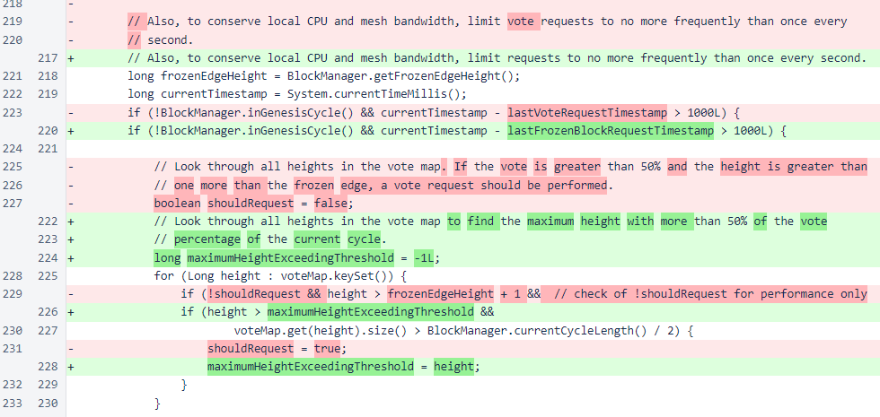The maximum height to request is one behind the maximum height for which 50% or more of the votes are available. The fallback has not been necessary for quite some time, as block votes are periodically rebroadcast if a block is not frozen.
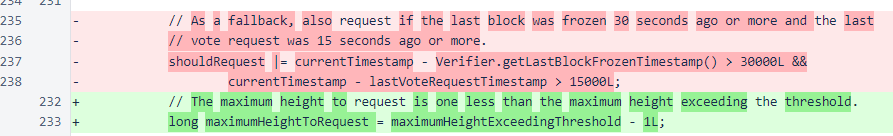Up to 10 blocks are requested in each iteration. If more than 10 are required, the frozenBlockRequestHeight field is used to ensure the entire range is queried over multiple iterations. There is some room to reduce the overhead of this method by making a single request for a block range, but testing has revealed intermittent issues with such requests failing due to invalid signatures, and that issue has yet to be investigated and resolved.
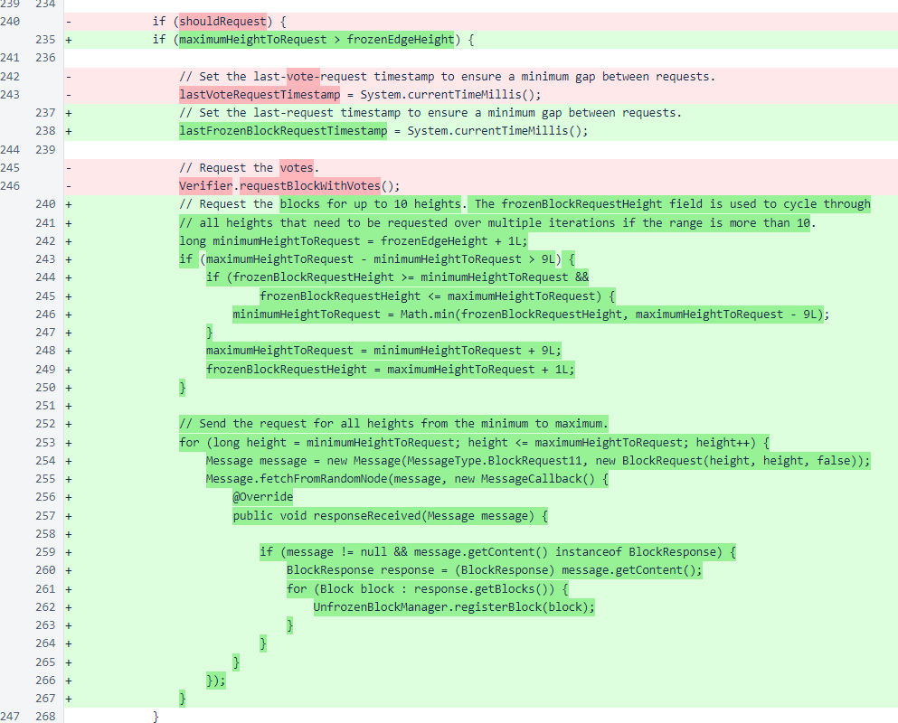Missing block votes are no longer requested. The messages remain in the system for compatibility with older verifiers, but they will be removed in a future version.

In UnfrozenBlockManager, the attemptToFreezeBlock() method now returns a value indicating whether a block was frozen.
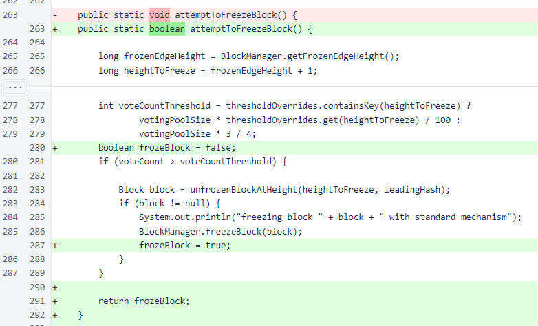A new method, attemptToFreezeChain(), has been added. This method will freeze an entire section of the blockchain between the frozen edge and the closest block for which the 75% voting threshold has been exceeded both for itself and for the next block in the chain. This method is the core of the new recovery process.
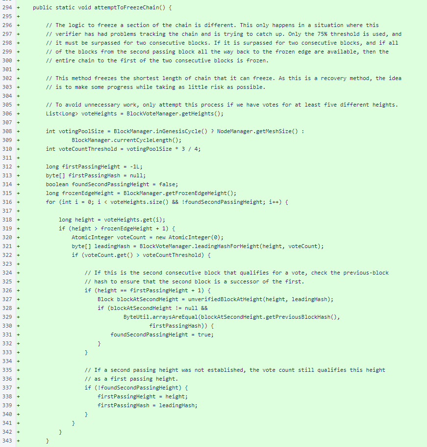To support attemptToFreezeChain(), the unverifiedBlockAtHeight() method has been added. Some refactoring has been done to avoid code duplication.
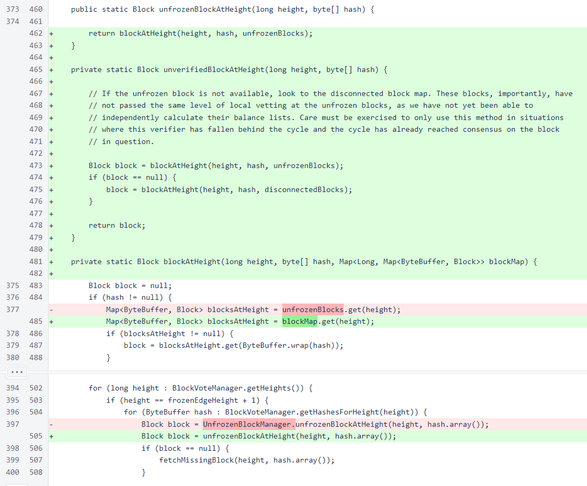In the Verifier class, total wait time for bootstrap responses has been reduced from 20 seconds to 5 seconds. Even with generous allowances for round-trip latency, 5 seconds is sufficient for all good responses to return and be processed. If one of the trusted entry points is not responsive at the time of initialization, this change will reduce initialization time by approximately 15 seconds.
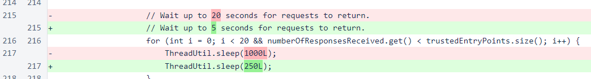If a block cannot be frozen using the standard mechanism, the chain mechanism is now attempted. The return value was added to the standard-mechanism method to ensure that it is given first chance to operate, across multiple iterations, on an entire chain of waiting blocks with sufficient votes for freezing.
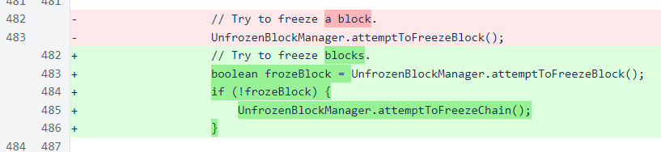The updated method name for the revised recovery process is now used.
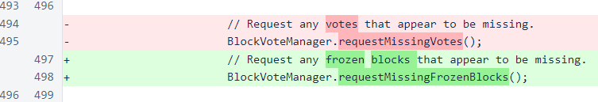Visibility of requestBlockWithVotes() has been reduced back to private, as this method is no longer used by BlockVoteManager.
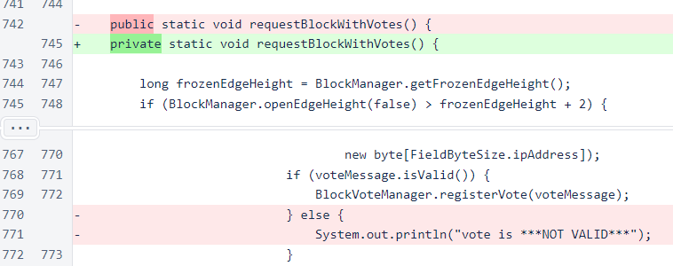In BlockWithVotesResponse, blocks are now provided when available, even if votes for the block are no longer available. This was initially implemented to assist with the recovery process. While the recovery process no longer uses this message, the modifications were left in place because this is more reasonable than the previous behavior.
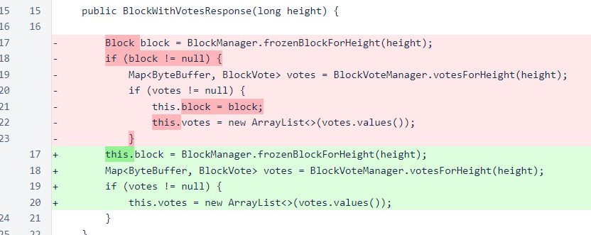In the status response, the number of votes requested is no longer included. This was a significant source of traffic before version 515, but verifiers no longer attempt to get votes for older blocks in the recovery process.
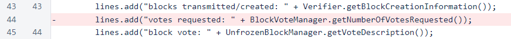